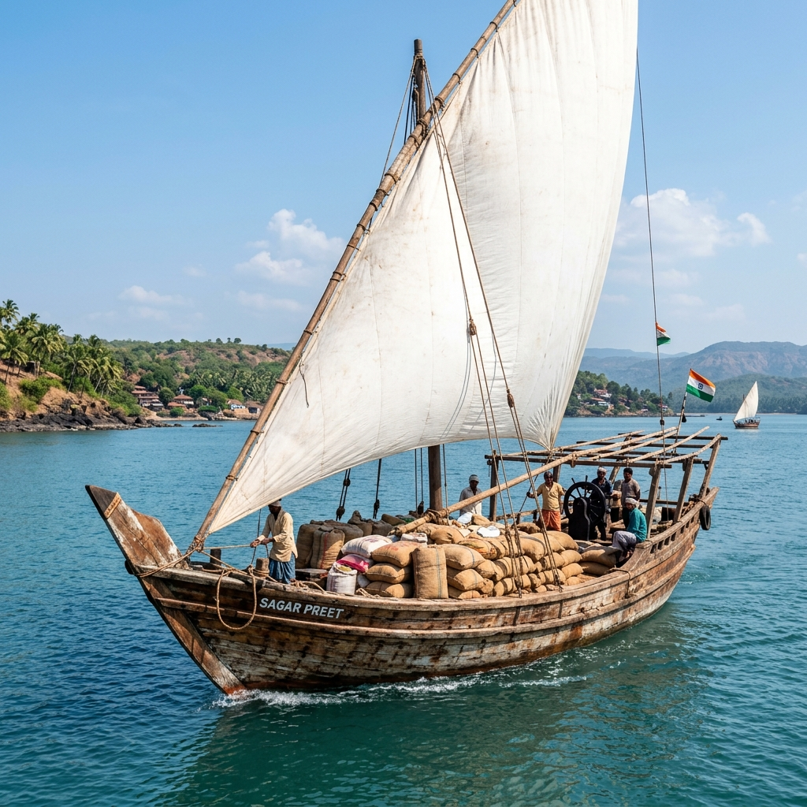
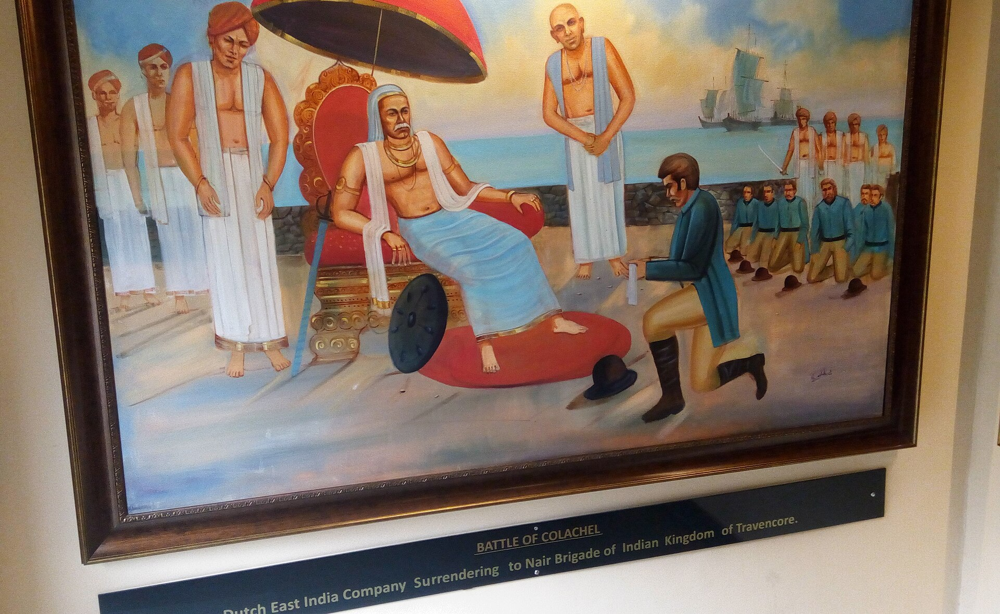
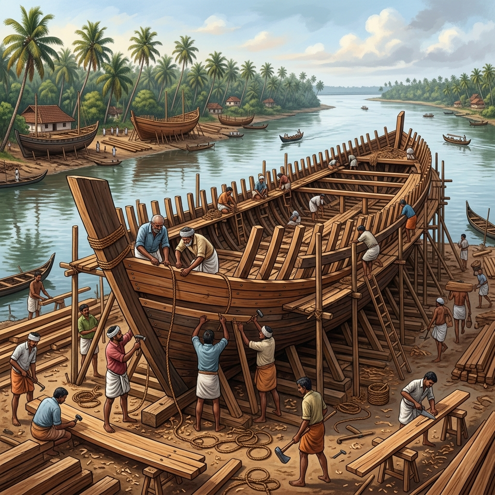

Battle of Diu (1509)
Step onto the historic ramparts of Diu. Explore the naval clash where Portuguese caravels defeated the allied Mamluk-Ottoman-Gujarat fleet, launching a century of European spice monopolies in Asia.
The Portuguese Monopolization of Indian Ocean Trade
By the turn of the 16th century, Portuguese explorer Vasco da Gama's route around the Cape of Good Hope threatened the lucrative spice trade monopoly held by Venice, Mamluk Egypt, and the Gujarat Sultanate. Francisco de Almeida was dispatched as the first Portuguese Viceroy of India with instructions to secure maritime dominance.
After a Portuguese squadron was defeated at Chaul in 1508—resulting in the death of Almeida's son, Lourenço—Almeida sought vengeance. He mobilized a fleet of 19 warships to crush the coalition of Mamluk, Ottoman, and Gujarati forces anchored at the strategic island harbor of Diu.
🏛️ At a Glance
- Combatants: Portuguese Empire vs. Egyptian Mamluks, Gujarat Sultanate, Zamorin of Calicut (supported by Venice).
- Location: Waters off Diu, Gujarat coast.
- Outcome: Decisive Portuguese victory.
- Legacy: Portuguese secure trade routes, build Diu Fort, and begin European colonial presence.
Belligerents and Commanders
The naval engagement united diverse powers of Europe, the Middle East, and western India.
Francisco de Almeida
Portuguese Viceroy who commanded from the flagship *Frol de la Mar*. Driven by personal grief, he directed a ruthless artillery campaign against the allied ships.
Amir Husain Al-Kurdi
Mamluk Egyptian admiral sent by Sultan Al-Ashraf Qansuh al-Ghawri. He commanded the core Egyptian galley divisions in Diu harbor.
Malik Ayyaz
Governor of Diu on behalf of the Gujarat Sultanate. A brilliant tactician who built Diu's harbor defenses but chose to preserve his city by withdrawing early.
📈 Strategic Innovations
- Advanced Gunships: Portuguese deployed caravels and carracks (nau) with heavy bronze cannons firing broadsides.
- Out-ranging dhows: Using superior gunnery to shell the coalition vessels before they could execute boarding maneuvers.
- Armored Men-at-Arms: Heavy steel plate armor gave Portuguese boarding parties a decisive advantage in hand-to-hand combat.
- Harbor Trapping: The coalition anchored inside the shallow harbor, which restricted their mobility and exposed them to shellfire.
Broadsides and Boarding Actions
The allied Mamluk-Egyptian fleet relied on traditional galley tactics: rowing close, firing arrows, and executing large-scale boarding actions. However, the Portuguese war caravels were designed for open-ocean sailing and equipped with heavy gun ports. Viceroy Almeida utilized his artillery to out-range the allied vessels, sinking Egyptian dhows from distance.
When boarding did occur, the heavily armored Portuguese soldiers cut through the light clothing of the Egyptian and Gujarati defenders. Seeing the destruction of the Mamluk flagships, Malik Ayyaz withdrew his vessels to protect the city, sealing the Portuguese victory.
The Shift in Maritime Power
How the Portuguese victory at Diu ended centuries of spice route monopolies and initiated the European colonial era.
European Dominance
Established Portuguese sea hegemony in the Indian Ocean, securing key trade routes for spice transit to Europe via the Cape.
Fortification of Diu
The victory paved the way for the construction of the massive stone Diu Fort, which remained a Portuguese territory until 1961.
Decline of Egypt & Venice
Deprived Mamluk Egypt and Venice of their spice customs duties, directly contributing to the Ottoman conquest of Egypt in 1517.
Chronology of the Naval Conflict
Follow the campaign events that led to the consolidation of Portuguese control.
Almeida's Mission
Francisco de Almeida is appointed first Viceroy of Portuguese India, building forts along the Malabar Coast.
Battle of Chaul
The joint Mamluk-Egyptian and Gujarati fleet defeats the Portuguese. Viceroy Almeida's son Lourenço is killed.
The Viceroy Sails
Viceroy Almeida rejects negotiations, sailing north from Cochin with 19 warships to find the allied fleet.
The Battle of Diu
Portuguese board and capture the Egyptian flagship. The coalition fleet is destroyed; Diu signs a peace treaty.
Naval Relics and Reconstructions
Explore the vessels, sea clashes, and maritime crafts of the early 16th century.

Indian Ocean Spice Dhow
The traditional trade vessel used across the spice routes.

Naval Artillery Clash
Reconstructed oil painting showing caravels firing broadsides.

Portuguese Caravel Frames
Construction detail of the ocean-going military vessels.
📚 References & Further Reading
- Barros, João de (1552). Décadas da Ásia. Lisbon.
- Gaspar Correia (c. 1560). Lendas da Índia. Academy of Sciences, Lisbon.
- Subrahmanyam, Sanjay (1993). The Portuguese Empire in Asia, 1500-1700: A Political and Economic History. Longman.
- Diffie, Bailey W. & Winius, George D. (1977). Foundations of the Portuguese Empire, 1415–1580. University of Minnesota Press.